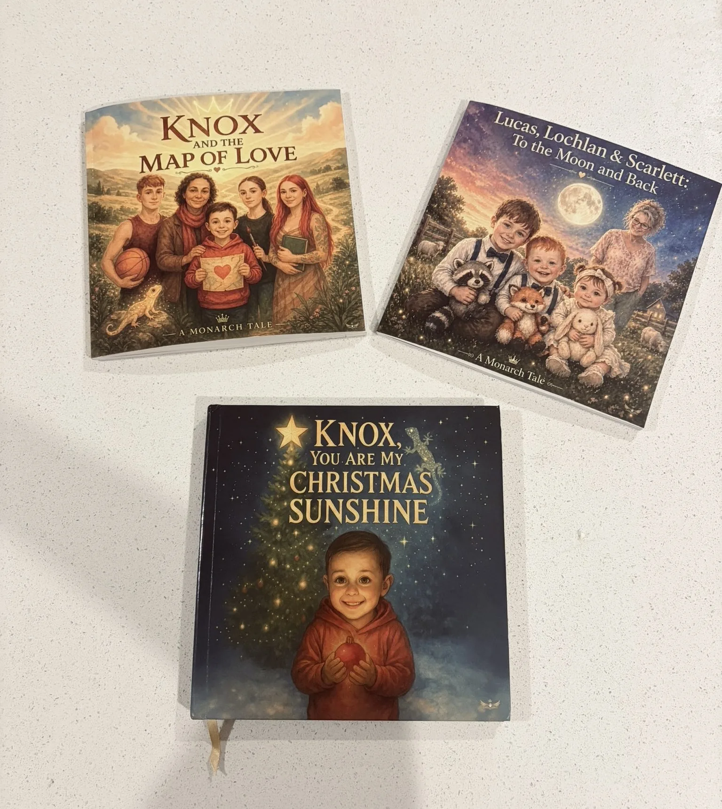

Childhood changes quietly. We preserve what families thought they would always remember.
A child’s favourite phrase. The way siblings find each other in a room. The song everyone sings in the car.
These details rarely feel historic while they are happening. They are simply family life. Then children grow, routines change and the exact feeling of that season becomes harder to reach.
Monarch Tales exists to notice those details while they are still here—and turn them into commissioned stories families can return to.
We do not begin with a template and insert a name. We begin by listening.

More than a likeness.
A meaningful family keepsake can preserve how a child thinks, who makes them feel safe, what they ask at bedtime, the traditions that shape home and the qualities their family hopes they never lose.
Faith can be woven in when requested. Siblings and twins can share the centre of a story while remaining distinctly themselves. Family relationships are treated as part of the child’s identity—not background decoration.
That is why the emotional standard for every Monarch Tale is not merely “This looks like my child.” It is: “My child was truly seen.”
Childhood is one of life’s greatest treasures—not because it lasts, but because it doesn’t.
Monarch Tales was founded by Prince Chinedum Chukwuma, a storyteller who believes the details families live every day deserve to be remembered.
The idea began with a simple realisation: while photographs preserve what childhood looked like, stories preserve what childhood felt like. The little phrases, family traditions, bedtime routines, funny moments and everyday memories that quietly shape who a child becomes are often the first things time takes away.
Sometimes I think about what it would feel like if someone had made a Monarch Tale for me when I was a child—something that could show me what I was like then, what I believed, what my parents noticed about me and what I thought my future would become.
Children grow quietly, and some versions of them only exist for a little while.
Prince writes the stories from each family’s memories. Generative AI is used for illustrations under his direction, guided by a character bible developed for the book.
The Monarch Tales name is registered in Australia. The business is also operated by Monarch Tales Keepsakes Ltd in Kigali, Rwanda, serving families across supported regions. We are building with care, one family story at a time.
Because photographs capture what life looked like. Stories preserve what life felt like.
Help shape the first chapter.
Twenty families will receive the complete Legacy experience while helping Monarch Tales refine the future of family-memory storytelling.